09. Design and Install a Kubernetes Cluster
Design and Install a Kubernetes Cluster
Design a Kubernetes Cluster
In this lecture we will discuss about designing a kubernetes cluster. Before you head into designing a cluster. I must ask the following questions.
What is the purpose of this cluster?Is it for learning or development or testing purpose or for hosting production grade applications.? What is cloud adoption at your organization?Do you prefer your platform to be managed by a cloud provider or a self hosted?What kind of workloads are you going to run on this cluster?How many applications are to be hosted on the Cluster? Few or many?What kind of applications are going to be hosted on the Cluster? Web applications or big data or analytics?
Depending on the kind of application the resource requirements may vary. What type of network traffic are these applications expecting?Continuous heavy traffic or burst?
Well let's try and break down some of these. If you want to deploy a cluster for learning purposes then a solution based on minikube or a single node cluster deployed using kubeadm on local VMs or cloud providers like GCP or AWS should do.We have deployed such a cluster in the beginners course.
To deploy a cluster for development and testing purposes, a multi node cluster with single master and multiple worker nodes would help. Again kubeadm is an appropriate tool. Or if on managed cloud environments, then quickly provision a cluster on GCP, AWS or AKS solution on Azure.
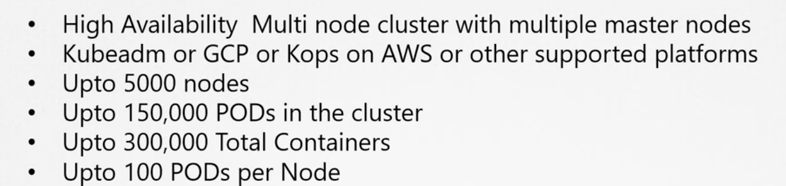
Let’s talk about production level clusters. For hosting production grade applications a High Availability Multi node cluster with multiple master nodes is recommended. We look at it in more detail about High Availability setup with multiple-master nodes later in this section. Again this can be set up with kubeadm or GCP or using kops on AWS or other supported platforms. You can have upto 5000 nodes in the cluster, a total of 150000 PODs in the cluster, 300,000 containers in total and upto 100 PODs per node.
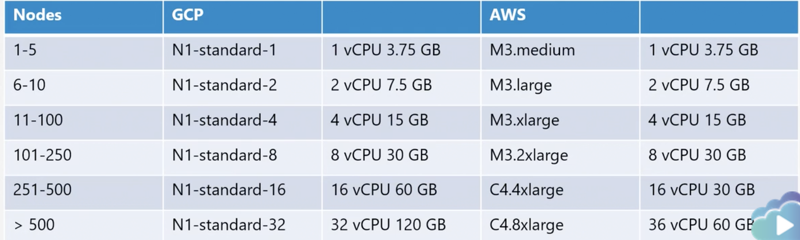
Depending on the size of your cluster. The resource requirement for your nodes varies. CSPs like GCP and AWS automatically select the right sized nodes for you based on the number of nodes in the cluster. This table shows the size of the instances and their resource specifications for a specific number of nodes.
If you are deploying on prem nodes then you could probably start with these numbers as base.
Cloud or Onprem?We have already discussed that all of these deployment options are available in any environment. For on-prem kubeadm is a very useful tool. Google Container engine makes provisioning kubernetes clusters on GCP very easy. It comes with one-click cluster upgrade features that makes it very easy to maintain the cluster. KOPS is a nice tool to deploy kubernetes clusters on AWS and the Azure Kubernetes Service or AKS helps in managing the hosted kubernetes environment on Azure.
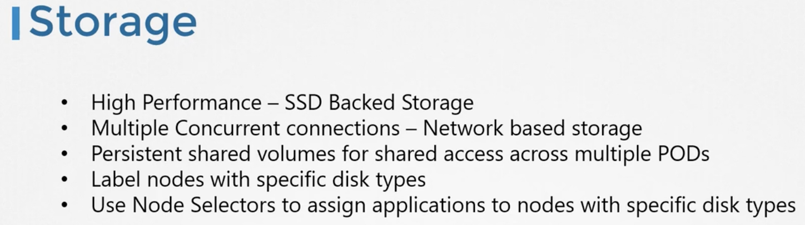
Depending on the workloads configured, your node and disk configurations will differ. For High Performance workloads rely on SSD Backed Storage. For multiple concurrent access consider network based storage. For shared access to volumes across multiple PODs, Consider persistent storage volumes that we discussed in the storage section.
Consider defining different storage classes and allocating the right class to the right applications.
The Nodes forming a kubernetes cluster can be physical or virtual. In our case we will be deploying virtual machines on VirtualBox environments that have nodes of our cluster. You may chose to deploy on physical machines or virtual machines or cloud environments like GCP, AWS, Azure or any other platform of your choice.
We will be building a cluster with three nodes, one master and two worker nodes. Now We know that master nodes are for hosting control plane components like the kube-api server, etcd server and others, while worker nodes are for hosting workloads. However this is not a strict requirement. The master nodes are also considered as nodes and can host workloads. As a best practice it is recommended to dedicate master nodes for control plane components only specially in a production environment. Deployment tools like kubeadm prevent workloads from being hosted on master nodes by adding a taint to the master node.
You must use a 64 bit Linux operating system for nodes. Another thing to note is that typically you have all the control plane components on the master nodes. However, in large clusters you may choose to separate the ETCD clusters from the master node to its own cluster nodes. We will discuss more about the different topologies for that in the upcoming lecture when we talk about high availability setup. Well those are some of the considerations for designing a kubernetes cluster.
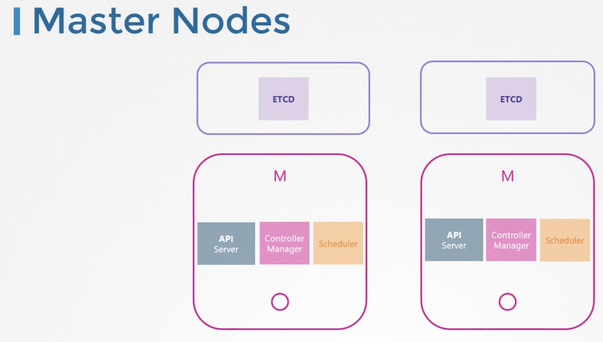
Choosing Kubernetes Infrastructure
In this lecture we talk about the different choices available for the infrastructure hosting a Kubernetes cluster. In the previous lecture we discussed about the various options we have in deploying a kubernetes cluster.
Let's look at it in a bit more detail here. Kubernetes can be deployed on various systems in different ways. Starting with your laptops, to physical or virtual servers within an organization as well as those in the cloud. Depending on your requirements your cloud ecosystem and the kind of applications you wish to deploy you may choose one of these solutions. On a laptop or a local machine, There are a number of ways to get started.
First of all on a supported Linux machine you can get started with installing the binaries manually and setting up a local cluster. However that is too tedious especially if you are just getting started. So relying on a solution that automates all that will help in setting up a cluster in a matter of minutes. We will look at some of those solutions in a bit. On Windows on the other hand, you cannot setup kubernetes natively as there are no windows binaries. You must rely on virtualization software like Hyper-V or Vmware workstation or VirtualBox to create Linux VMs on which you can run kubernetes.
There are also solutions available to run kubernetes components as docker containers on windows VMs. But remember, even then the docker images are Linux based and under the hood they run on a small Linux OS created by Hyper-V for running Linux docker containers. So what are some of the solutions available to easily get started with kubernetes on a local machine? Minikube, deploys a single node cluster easily. It relies on one of the virtualization software like Oracle Virtualbox to create virtual machines that run the kubernetes cluster components.
We have seen this in the beginners course. The kubeadm tool can be used to deploy a single node or a multi node cluster real quick before this you must provision the required hosts with supported configuration yourself. So the different between the first two and kubeadm is that the first two provisions a VM with supported configuration by itself, whereas kubeadm expects the VMs provisioned already. At the same time it allows for deploying multi-node clusters, whereas the former doesn’t. Again deploying a kubernetes cluster locally on a laptop is usually for learning, testing and development purposes. For production purposes, there are many ways to get started with a kubernetes cluster. Both in a private or a public cloud environment. I would categorize them as Turnkey solutions or Hosted or managed solutions. Turnkey solutions are where you provision the required VMs and use some kind of tools or scripts to configure kubernetes cluster on them.
At the end of the day you are responsible for maintaining those VMs, and patching them and creating, upgrading them etc. But cluster management and maintenance are mostly made easy using these tools and scripts. For example deploying a kubernetes cluster on AWS using the KOPS tool. Hosted solutions are more like Kubernetes as a service solution, where the cluster along with the required VMs are deployed by the provider and kubernetes is configured by them by the provider. The VMs are maintained by the provider.
For example, Google Container Engine lets you deploy a kubernetes cluster in a matter of minutes, without you having to perform any configuration by yourself. Let us look at some of the Turnkey solutions.
OpenShift is a popular on-prem kubernetes platform by RedHat. For those of you who may not be familiar, OpenShift is an open source container application platform and is built on top of kubernetes. It provides a set of additional tools and a nice GUI to create and manage kubernetes constructs and easily integrate with CI/CD pipelines etc.
Cloud Foundry Container Runtime is an open-source project from Cloud Foundry that helps in deploying and managing highly available kubernetes clusters using their open-source tool called BOSH.
If you wish to leverage your existing Vmware environment for kubernetes, then the Vmware Cloud PKS solution is one that should be evaluated.
Vagrant provides a set of useful scripts to deploy a Kubernetes cluster on different cloud service providers. All of these solutions makes it easy to deploy and manage a kubernetes cluster privately within your organization.You must have a few Virtual Machines with supported configurations in place. These are few of the many kubernetes certified solutions. Well there are many more, so check them out in the kubernetes documentation page. Let us look at some of the hosted solutions. Google Container Engine is a very popular kubernetes as a service offering on Google Cloud Platform. Openshift online is an offering from RedHat where you can gain access to a fully functional kubernetes cluster online. Azure has Azure Kubernetes Service. And finally Amazon Elastic Container Service for Kubernetes is Amazon’s hosted kubernetes offering.
Again, these are just some of the solutions there are many more. So what is our choice? So our design now has 3 nodes, 1 master, 2 worker, to be deployed on a laptop with Virtual Machines provisioned on VirtualBox.
Configure High Availability
We now look at high availability in kubernetes. So what happens when you lose the master node in your cluster?As long as the workers are up and containers are alive, your applications are still running.Users can access the application until things start to fail. For example a container or POD on the worker node crashes. Now, if that pod was part of a ReplicaSet then the replication controller on the master needs to instruct the worker to load a new pod. But if the Master is not available and so are the controllers and schedulers on the master. There is no one to recreate the pod and no one to schedule it on nodes. Similarly, since the kube-api server is not available you cannot access the cluster externally through the kubectl tool or through API for management purposes. Which is why you must consider multiple master nodes in a High availability configuration in your production environment. A high availability configuration is where you have redundancy across every component in the cluster so as to avoid a single point of failure.
The master nodes, the worker nodes, the control plane components, the application of course, which we already have multiple copies in the form of replicasets and services. So our focus in this lecture is going to be on the master and control plane components. Let's take a better look at how it works. We’ve been looking at a 3 node cluster with 1 master and 2 worker nodes throughout this course. In this lecture, we will focus on just the master node. As we learned already the master node hosts the control plane components including the API, Controller Manager, Scheduler and ETCD server. In a HA setup, with an additional master node, you have the same components running on the new master as well. So how does that work? Running multiple instances of the same components? Are they going to do the same thing twice?How do they share the work among themselves?
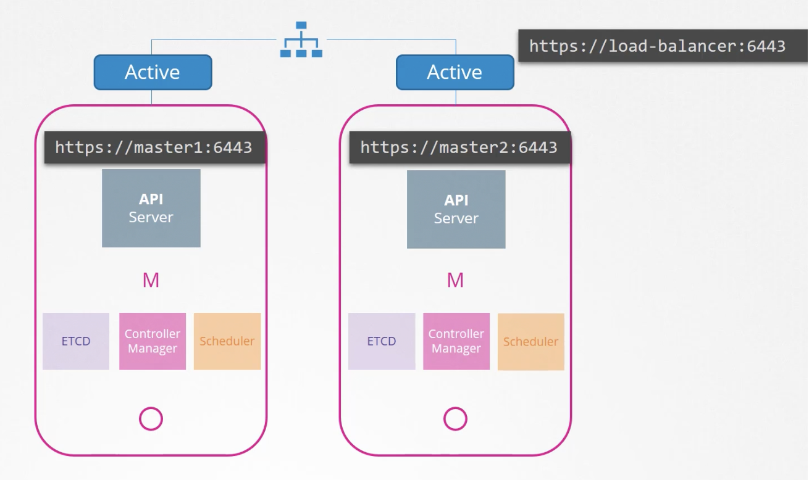
Well that differs based on what they do. We know that the API server is responsible for receiving requests and processing them or providing information about the cluster. They work on one request at a time. So the API servers on all cluster nodes can be alive and running at the same time in an active-active mode. So far in this course we know that the kubectl utility talks to the API server to get things done and we point the kubectl utility to reach the master node at port 6443. That’s where the API server listens and this is configured in the kube-config file. Well now with 2 masters, where do we point the kubectl to? We can send a request to either one of them but we shouldn't be sending the same request to both of them. So it is better to have a load balancer of some kind configured in the front of the master nodes that split traffic between the API servers. So We then point the kubectl utility to that load balancer. You may use NGINX or HA proxy or any other load balancer for this purpose.
What about the scheduler and the controller manager? These are controllers that watch the State of the cluster and take actions. For example the controller-manager consists of controllers like the replication controller that is constantly watching the state of PODs and taking necessary actions, like creating a new POD when one fails. If multiple instances of those run in parallel, then they might duplicate actions resulting in more PODs than actually needed. The same is true with the scheduler. As such they must not run in parallel. They run in an active-standby mode. So then who decides which among the two is active and which is passive. This is achieved through a leader election process.So how does that work? Let's look at controller manager for instance. When a controller manager process is configured. You may specify the --leader-elect-option which is by default set to true. With this option when the controller manager process starts it tries to gain a lease or a lock on an endpoint object in kubernetes named as kube-controller-manager-endpoint. Whichever process first updates the endpoint. With this information gains the lease and becomes the active of the two. The other becomes passive; it holds the lock for the lease duration specified using the --``leader-elect-lease-duration option which is by default set to 15 seconds. The active process then renews the lease every 10 seconds which is the default value for the option --``leader-elect-renew-deadline. Both the processes tries to become the leader every two seconds, set by the --``leader-elect-retry-period option. That way if one process fails maybe because the first must of crashes then the second process can acquire the lock and become the leader. The scheduler follows a similar approach and has the same command line options.
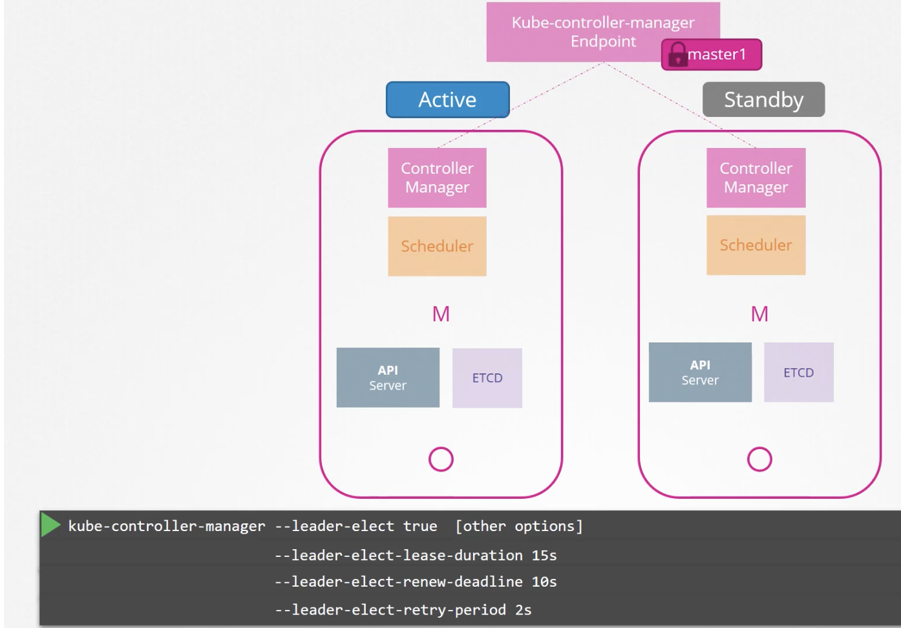
Next up, ETCD. We discussed about ETCD earlier in this course. It's a good idea to go through that again now, just to quickly refresh your memory as we're going to discuss some topics related to how ETCD works in this lecture. With ETCD, there are two topologies that you can configure in kubernetes. One is as it looks here and the same architecture we have been following throughout this course, where ETCD is part of the kubernetes master nodes. It’s called a stacked controlplan nodes topology. This is easier to set up and easier to manage. And requires fewer nodes. But if one node goes down both an ETCD member and control plane instance is lost and redundancy is compromised. The other is where ETCD is separated from the control plane nodes and runs on its own set of servers. This is a topology with external ETCD servers. Compared to the previous topology this is less risky as a failed control plane node does not impact the ETCD cluster and the data it stores.
However it is harder to set up and requires twice the number of servers for the external etcd nodes. So remember, the API server is the only component that talks to the ETCD server and if you look into the API service configuration options, we have a set of options specifying where the ETCD server is.
So regardless of the topology we use and wherever we configure ETCD servers, whether on the same server or on a separate server ultimately we need to make sure that the API server is pointing to the right address of the ETCD servers.
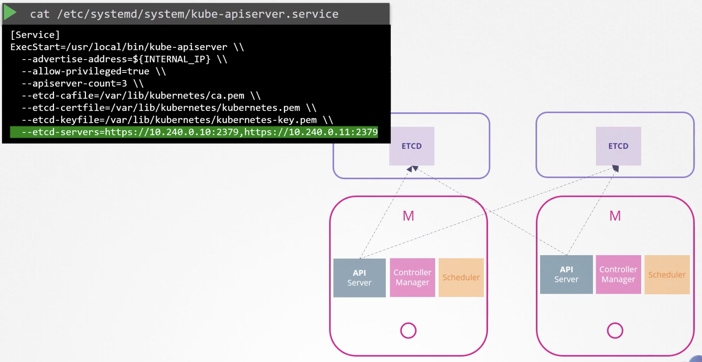
Now remember ETCD is a distributed system, so the API server or any other component that wishes to talk to it, can reach the ETCD server at any of its instances. You can read and write data through any of the available ETCD server instances. This is why we specify a list of etcd-servers in the kube-apiserver configuration.
So back to our design we had originally planned for a single master node in our cluster. Now with HA, we decided to configure multiple masters. We also mentioned about a load balancer for the API server. So we will have that as well. So we now have a total of five nodes in our cluster.
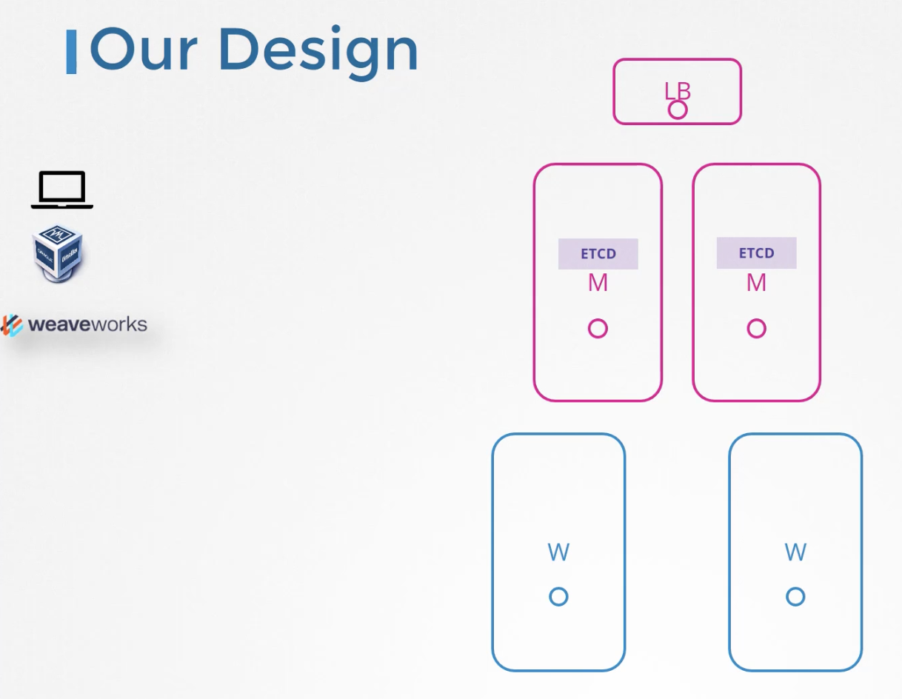
ETCD in HA
ETCD in a high availability setup.
So this is really a prerequisite lecture for the next lecture where we talk about configuring Kubernetes in a highly available mode. Well one portion of that deals with configuring ETCD in HA mode. So in this lecture we will discuss about ETCD in HA mode. In the beginning of this course we took a quick look at ETCD. We will now recap real quick and more importantly focus on the cluster configuration on ETCD. So let’s recap real quick and look at the number of nodes in the cluster, and what a RAFT protocol is etc ?
So what is ETCD? It's a distributed reliable key value store that is simple, secure and fast. So let's break it up.Traditionally data was organized and stored in tables like this. For example to store details about a number of individuals. A key value store stores information in the form of documents or pages. So each individual gets a document and all information about that individual is stored within that file. These files can be in any format or structure and changes to one file, does not affect the others.
In this case the working individuals can have their files with salary fields. While you could store and retrieve simple key and values, when your data gets complex you typically end up transacting in data formats like JSON or YAML. So that’s what etcd is and how you quickly get started with it. We also said that ETCD is distributed. So what does that mean?And that is what we're going to focus on in this lecture. We had ETCD on a single server. But it’s a database and may be storing critical data. So it is possible to have your datastore across multiple servers. Now you have 3 servers, all running etcd, and all maintaining an identical copy of the database. So if you lose one you still have two copies of your data. Perfect!But how does it ensure the data on all the nodes are consistent?You can write to any instance and read your data from any instance. ETCD ensures that the same consistent copy of the data is available on all instances at the same time. So how does it do that?With reads, its easy. Since the same data is available across all nodes, you can easily read it from any nodes. But that is not the case with writes. What if two write requests come in on two different instances? Which one goes through? For example I have writes coming in for name set to john on one and with the name joe on the other. Of course we cannot have two different data on two different nodes.
When I said ETCD can write through any instance, I wasn't 100% right. ETCD does not process the writes on each node. Instead, only one of the instances is responsible for processing the writes. Internally the two nodes elect a leader among them. Of the total instances one node becomes the leader and the other node becomes the followers. If the writes came in through the leader node, then the leader processes the write. The leader makes sure that the other nodes are sent a copy of the data. If the writes come in through any of the other follower nodes, then they forward the writes to the leader internally and then the leader processes the writes. Again when the writes are processed, the leader ensures that copies of the write are distributed to other instances in the cluster. Thus a write is only considered complete, if the leader gets consent from other members in the cluster.
So how do they elect the leader among themselves? And how do they ensure a write is propagated across all instances?
- → ETCD implements distributed consensus using the RAFT protocol.*
Let's see how that works in a three node cluster. When the cluster is setup we have 3 nodes that do not have a leader elected. The RAFT algorithm uses random timers for initiating requests. For example a random timer is kicked off on the three managers; the first one to finish the timer sends out a request to the other node requesting permission to be the leader. The other managers on receiving the request respond with their vote and the node assumes the Leader role. Now that it is elected the leader it sends out notification at regular intervals to other masters informing them that it is continuing to assume the role of the leader. In case the other nodes do not receive a notification from the leader at some point in time which could either be due to the leader going down or losing network connectivity the nodes initiate a re-election process among themselves and a new leader is identified, going back to our previous example where a write come seen, it is processed by the leader and is replicated to other nodes in the cluster, the write is considered to be complete only once it is replicated to the other instances in the cluster.
We said that the ETCD cluster is highly available. So even if we lose a node it should still function. Say for example a new write comes in but one of the node is not responding. And hence the leader is only able to write to 2 nodes in the cluster. Is the write considered to be complete? Does it wait for the third node to be up? Or does it fail? A write is considered to be complete, if it can be written on the majority of the nodes in the cluster. For example, in this case of the 3 nodes, the majority is 2. So if the data can be written on two of the nodes then the write is considered to be complete. If the third node was to come online then the data is copied to that as well. So what is the majority? Well a more appropriate term to use would be Quorum. Quorum is the minimum number of nodes that must be available for the cluster to function properly or make a successful write in case of 3. we know its 2. For any given number of nodes, the quorum is the total number of nodes divided by 2 + 1.
So the Quorum of 3 nodes is If there is a .5 consider the whole number only so that's 2.
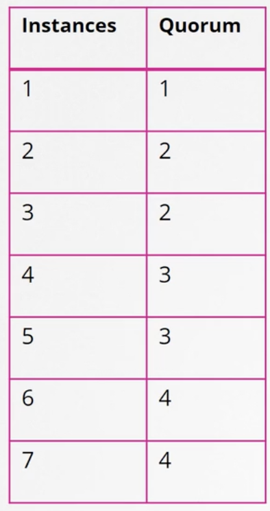
Similarly the quorum of 5 nodes is 3. So here is a table that shows the quorum of clusters of size 1 to 7. Quorum of 3 and 5 are what we calculated. Quorum of 1 is 1 itself. Meaning if you have a single node cluster none of these really apply. If you lose that node everything's gone.
If you look at 2 and apply the same formula. the quorum is 2 itself. 2/2 is 1 and 1 + 1 is 2. So even if you have 2 instances in the cluster the majority is still 2. If one fails,There is no quorum. So writes won't be processed. So having two instances is like having one instance, it doesn't offer you any real value as quorum cannot be met.
Which is why it is recommended to have a minimum of 3 instances in an ETCD cluster. That way it offers a fault tolerance of at least 1 node. If you lose one, you can still have quorum and the cluster will continue to function. So the first column minus the second column gives you the fault tolerance. The number of nodes that you can afford to lose while keeping the cluster alive. So we have 1 to 7 nodes here. 1 and 2 are out of consideration.
So from 3 to 7 what do we consider?
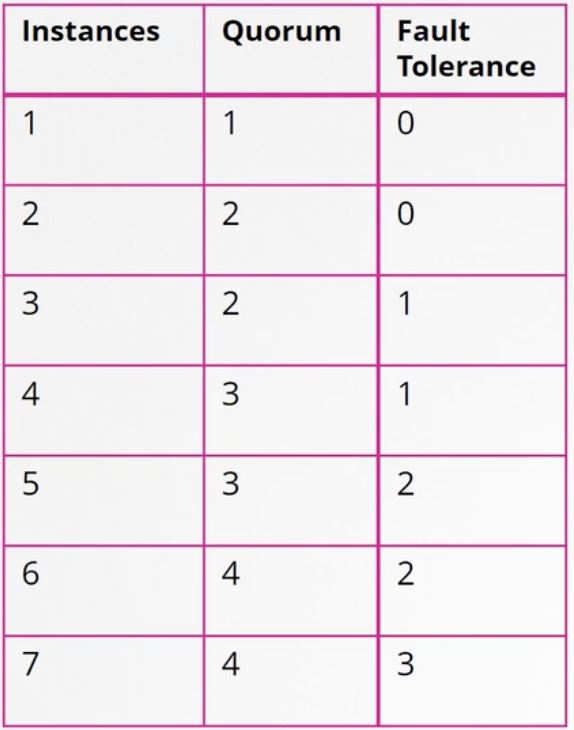
As you can see 3 and 4 have the same fault tolerance of 1 and 5 and 6 have the same fault tolerance of 2. When deciding on the number of master nodes,it is recommended to select an odd number as in the table, 3 or 5 or 7.
Say we have a 6 node cluster. So for example due to a disruption in the network it fails and causes the network to partition. We have 4 nodes on one and 2 on the other. In this case the group with 4 nodes has a quorum and continues to operate normally. However if the network got partitioned in a different way resulting in nodes being distributed equally between the two, each group now has 3 nodes only. But since we originally had 6 manager nodes, the quorum for the cluster to stay alive is 4
But if you look at the groups here neither of these groups have four managers to meet the quorum so it results in a failed cluster. So with an even number of nodes there is a possibility of the cluster failing during a network segmentation. In case we had an odd number of managers originally, say 7, then after the network segmentation we have 4 on one segmented network and 3 on the other, and so our cluster still lives on the group with 4 managers as it meets the quorum of 4.
No matter how the network segments there are better chances for your cluster to stay alive in case of network segmentation with an odd number of nodes. So an odd number of nodes is preferred over even number having 5 is preferred over 6 and having more than 5 nodes is really not necessary as 5 gives you enough fault tolerance.
To install ETCD on a server.download the latest supported binary. Extract it, create the required directory structure. Copy over the certificate files generated for ETCD. We discussed how to generate these certificates in detail in the TLS Certificates section. Then configure the ETCD service.
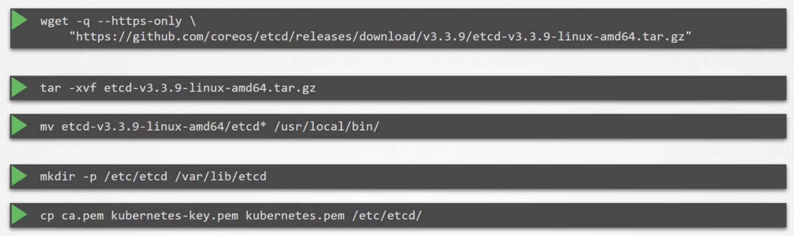
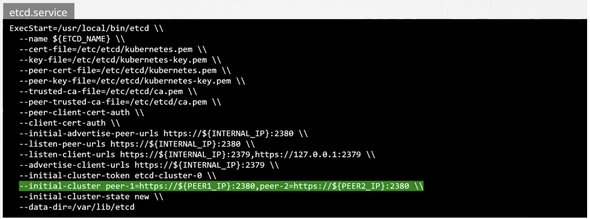
What's important here is to note that the initial cluster option where we passing the peer's information that’s how each etcd service knows that it is part of a cluster and where its peers are.Once installed and configured use the etcdctl utility to store and retrieve data. ETCDCTL utility has two API versions. V2 and V3. So the commands work different in each version. Version 2 is default. However we will use version 3. So set an environment variable ETCDCTL_API=3, otherwise the below commands won’t work.
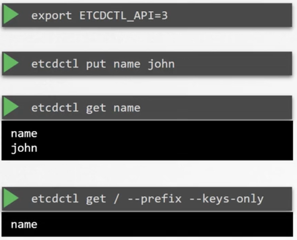
Run the etcdctl put command and specify the key as name and value as john. To retrieve data run the etcdctl get command with the key /name and it returns the value john.To get all keys run the etcdctl get –keys-only command. Going back to our design, how many nodes should our cluster have? In an HA environment as you can see having 1 or 2 instances doesn’t really make any sense. As losing 1 node, in either case will leave you without quorum and thus render the cluster non functional. Hence the minimum required nodes in an HA setup is 3. We also discussed why we prefer odd number of instances over even number. Having an even number of instances can leave the cluster without quorum in certain network partition scenarios. So all that even number of nodes is out of scope. So we are left with 3 5 and 7 or any odd number above that 3 is a good start but if you prefer a higher level of full tolerance then 5 is better. But anything beyond that is just unnecessary. So considering your environment, the fault tolerance requirements and the cost that you can bear you should be able to choose one number from this list. In our case we go with 3. So how does our design look now? With HA, the minimum required number of nodes for fault tolerance is 3. Now while it would be great to have 3 master nodes we are limited by our capacity of our laptop. So we will just go with 2. But if you're deploying the setup in another environment and have sufficient capacity feel free to go with 3. We also chose to go with the stacked topology where we will have the ETCD servers on the master nodes itself.
Introduction to Deployment with kubeadm
The kubeadm tool, which can be used to bootstrap a kubernetes cluster, the kubeadm tool helps us set up a multi node cluster following kubernetes best practices. As we discussed, the kubernetes cluster consists of various components, such as the kubeAPI server, ETCD controllers, etc., and we've seen some of the requirements are on security and certificates to enable communication between these components, installing all of these various components individually on different nodes and modifying the configuration files to make sure these components point to each other. And setting up certificates to make it work is a tedious task. The kubeadm tool helps us by taking care of all of those tasks.
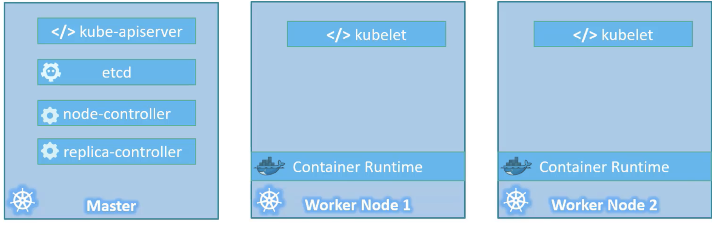
Let's go through the steps to set up a kubernetes cluster using the kubeadm tool at a high level.
First, you must have multiple systems or virtual machines provisioned for configuring a cluster. We will see how to set up your laptop to do just that. That's if you're not familiar with it.
- Once the systems are created, designate one node as master and others as worker notes.→ The next step is to install a container runtime on the hosts.→ We will be using Docker. So we must install Docker on all the nodes.→ The next step is to install the Kubeadm tool on all the nodes. The kubeadm tool helps us bootstrap the kubernetes solution by installing and configuring all the required components in the right nodes in the right order. → The next step is to initialize the master server, during this process all the required components are installed and configured on the master server.
Once the master is initialized and before joining the worker nodes to the master, you must ensure that the network prerequisites are met and normal network connectivity between the systems is not sufficient for this.
Kubernetes requires a special networking solution between the master and worker nodes, which is called the pod network. The last step is to join the worker node to the master node. We’re then all set to launch our application in the kubernetes environment.
https://github.com/kodekloudhub/certified-kubernetes-administrator-course
Deploy with Kubeadm – Provision VMs with Vagrant
In this demo, we will see how to provision the VMs required to set up a single master two worker node kubernetes cluster using virtual box and vagrant on our local system. As a prerequisite You must have virtual box and vagrant installed. We will use a vagrant file to automate the provisioning of the virtual machines required for the master and worker notes.
The vagrant file is located in the GitHub repository associated with this course. So we clone this repository first by copying the repository url and running the clone command followed by the URL to the repository. Once cloned cd into the cloned directory. Review the vagrant file to make sure it has the right settings.
git https://github.com/kodekloudhub/certified-kubernetes-administrator-course.git
We see that we have configured the number of Master nodes to one and worker nodes to two. And the IP network range is 192.168.56 . This means that when the VMs are created, they are going to get IP addresses within this range.
So that looks good. We come out of the file and we run the background status command to check the status of the VM And since we have not created them yet, they are in a not created state. But we can see the names of machines that it would create.
Once we provision, they will be named kubemaster, kubenode01 and kubenode02.
We will now run the vagrant up command to provision the VMs.
It uses the Ubuntu Bionic 64 base images. The base image is pulled and the beams are being provisioned.
Now, depending on your network bandwidth and your hosts resources, this may take some time.
So let's wait.
Now, first, the kube-master is provisioned and then the kubenode01 is provisioned and finally, and kubenode02 gets provisioned
We now check the status again and see that it's all in our running state to access one of these system, use the vagrant as a search command. So we run the vagrant as a sage cube master command to assist into the master node.
So we are in the master node. We run just any command to make sure it's working. So we were on the uptime command to check if the commands are working. And then we will now log out of the system and test SSL connectivity to the other nodes01 And followed by node02.
So they look good. Now we're all set.
Demo – Deployment with Kubeadm
We have now set up the nodes required to set up a kubernetes cluster. We have set up a master node and two worker nodes, node01 and node02. Let us now proceed to the kubeadm documentation page to install a kubernetes cluster. We will start with the prerequisites. So we must have a supported operating system like, for example, Ubuntu 16.04 or higher, which we already do. That's what we did in the previous demo.
We have some hardware requirements to have at least 2GB of RAM, 2CPUs and network connectivity between the VMs, which we have already taken care of in the previous video. Another thing is to make sure that our firewall and network security settings are in place. Otherwise, the nodes will run into connectivity issues.
For this, we must let IP tables see bridged traffic. We must first make sure the BR_net filter module is loaded before the step. So we can do that by running the command lsmod | grep br_netfilter.
So we see that it's not loaded as there is no result. So we run the modprobe command to load the kernel module. sudo modprobe br_netfilter We now execute that on all the notes. Once that is done, we run this set of commands to create the new kernel parameters.
cat <<EOF | sudo tee /etc/sysctl.d/k8s.conf
net.bridge.bridge-nf-call-ip6tables = 1
net.bridge.bridge-nf-call-iptables = 1
EOF
We then do that on all the nodes.The next step is to install container runtime on the nodes. We will be using Docker in this example. For this we use the documentation link and click on Docker.
We will use these commands to install the latest stable version of Docker.These need root privileges.
So I will switch to sudo to make the next steps easier by running the sudo -i command. I will now paste the command a copy to set up the software repositories. We will then proceed to execute the same on all the three machines.
OK, so that's done.
The next step is to install Docker's official gpg keys. So we will do that. Also on all the machines. The next step is to add the Docker APT repository. We will then do the same on all the systems. The next step is to install the docker runtime.
We run the commands to install the latest stable version of Docker. If the version of Docker that is shown here has changed as you're watching this, then feel free to follow the latest version of documentation to install the latest version of Docker. Run that on all the nodes. This may take a few minutes, so wait for that to finish. The next step is to set up the docker daemon.For this, we create a daemon.json file and then create a directory for the docker service. We then run the system a demon reload and restart Docker command to load and start the Docker service To verify Docker's installed, run the systemctl status dockerd service command and verify that it is running.
Confirmed that that's the case on all the three notes. We now go back to the documentation page to proceed with the installation of kubernetes components using kubeadm. The next step is to install the kubernetes related packages such as the two BDM kubelet and kubectl on all the notes. The cube, the end tool is used to bootstrap the cluster cube.
That is the process that's responsible for managing pods and containers on the note.
And the Cube Cuttle utility is the components command line tool for this run the commands to update
repository and install the required packages.
Run these on all the notes and wait for it to finish.
The next section about configuring Seagram driver is not applicable when using Docker as QB, GM will
automatically detect the group driver for the Kubla.
If you're not using Docker, then we must follow the step to specify the secret driver so we can skip
this for now.
The next step is to configure the QB GM cluster by clicking on this link.
This takes us to the cluster creation process using cubie a.T.M.
The first phase is to initialize control plane node.
The first step in that is only applicable if we are deploying a highly available cluster.
In this demo, we are not.
We just have a single master node.
So we will skip that for now.
The next step is to choose a part network, add on.
And when we do that.
Decide what is network IP address range.
We are going to use for the port.
There are multiple network options available for networking between ports in a coronets cluster.
So if you click on this link, which takes you down in that page today, pertinent Roxette section,
you will see different options for configuring a network such as Kalikow, Psyllium Quantitive, Kue,
Browder, Veev, etc..
In this case, we will make use of Weev and we can choose a network range that does not conflict with
the network of the nodes.
Remember that we configure the nodes to be in the 190 to that 168 or 56 network.
We will use a network sider that's different from that range for parts.
We will use tender to 44 dot zero zero slash 16 network.
The third step can be ignored as well, since we are using Docker as our container runtime.
But in case you're using a different one, you may use this option to specify that the fourth step is
what we will configure.
We must specify the cabinet is API servers, IP address as the API server advertize address.
This is so that the API server listens on that on the correct static IP address.
We have set on the master node which will make the API server accessible to the worker nodes on any
other clients on that IP address.
Once we have decided the values for the options, we can proceed with initializing the cluster, using
the Cube Edman in its command.
We will run this on the master node.
Remember, this step must only be run on the master node because that's where all the cluster components
have to be installed and initialized.
We copy and paste the cube admin in his command on the master node.
We will then pass in all the required parameters such as the pod network spider, which will be tender
to 44 dodgier Arturo's last 16.
And the API server advertize address is going to be the static IP address of the master node.
Which will be one only to 168 dot fifty six dot two, which is the IP address of the master.
Now if you're not sure about the IP address of the matter node, we can double check that.
So I will for now comment this command so that it is not executed and that I can later access it African
from the IP address.
I will then run the I have conflict command to confirm the IP address of the node.
I can confirm that it is the correct IP address.
I will now run the cube idiom in its command.
It runs a set of pre-flight checks to make sure all prerequisites are in place.
So let's give it some time to run.
The checks are complete and everything looks good.
So we proceed with the creation of security certificates and installation of the various components.
We give it some more time for the insulation to finish.
Now the insulation is complete.
We will now perform the post installation tasks as the output states to start the cluster.
You need to run the following as a regular user.
So we have been running things as the route user.
So we will run the logout command to log out and become the regular user.
Once we are a regular user, we must create a directory under the user's home directly and copy the
admin dot com file.
The admin, not con file, has the necessary information and credentials required to access the cabinet
cluster using the Cube Cuttle command line utility.
It must be placed in the user's home directory under the DOT Cube directory.
So we are on this command to create the DOT Cube directory and copy the admin dot com file into it and
also set the right ownership on it.
The next step is to deploy a part network to the cluster.
Earlier, we decided that we will use Weev as our port network solution.
So we need to do that.
After the port network solution is set up, we will have the worker node's join the cluster using the
command given here.
Keep a out of the command that will be used to join the work.
Noticed the cluster.
I'm just going to copy and echo the command to my screen terminal so that it is available in the terminal
history and I can retrieve it later.
Or you may just copy it to an external text editor.
Let's run the Cucuta's get node's command to check the status of the cluster.
Now we see that the cluster consists of the cube master node only.
And the status is not ready.
As of now, the version is one point eighteen point three.
The reason is not ready is because we do not have a port network solution for this.
We go back to the documentation side and go to the port network section, select Weev and copy the command
to install.
We've.
Pasted on the master note and executed.
We see that the port network solution is being installed and all the required components are created.
It creates a service account.
Rolls, roll bindings, deman sets, etc..
We discuss a lot about each of these in these certified as administrator course.
We have a section just for networking where we go from the absolute basics of network all the way to
how a weave solution works.
So check that out.
If you have time for now, let's proceed with adding the worker nodes to the cluster.
For this, we use the command we saved earlier.
We will copy it and run it on both the worker notes.
We see that the node has successfully joined the cluster.
Now we are on the KUKA to get notes.
Command on the master note and we will check the status.
It may take a few minutes for the worker notes to be in a ready state.
So let's monitor that.
We now see that they are in a red state.
Our cabinet is cluster is now ready.
We can now test by creating some objects.
Let's create a pot using the cube cuttle run engine next command and specify the engine X image.
We see it's created a pod by running the tube to get pods command.
The parts are still being created.
So we wait for a few minutes and we will see that it's now in a running state.
We will not delete it using the Cucuta delete part command.
TEST
- Install the kubeadm and kubelet packages on the controlplane and node01. Use the exact version of 1.21.0-00 for both. Note: You can connect to node01 using: ssh node01
====Follow the steps in the official documentation. These steps have to be performed on both nodes.
- set net.bridge.bridge-nf-call-iptables to 1:
cat <<EOF | sudo tee /etc/modules-load.d/k8s.conf
br_netfilter
EOF
cat <<EOF | sudo tee /etc/sysctl.d/k8s.conf
net.bridge.bridge-nf-call-ip6tables = 1
net.bridge.bridge-nf-call-iptables = 1
EOF
sudo sysctl --system
-
The docker runtime has already been installed on both nodes, so you may skip this step.
-
Install kubeadm, kubectl and kubelet on all nodes:
sudo apt-get update
sudo apt-get install -y apt-transport-https ca-certificates curl
sudo curl -fsSLo /usr/share/keyrings/kubernetes-archive-keyring.gpg https://packages.cloud.google.com/apt/doc/apt-key.gpg
echo "deb [signed-by=/usr/share/keyrings/kubernetes-archive-keyring.gpg] https://apt.kubernetes.io/ kubernetes-xenial main" | sudo tee /etc/apt/sources.list.d/kubernetes.list
sudo apt-get update
sudo apt-get install -y kubelet=1.21.0-00 kubeadm=1.21.0-00 kubectl=1.21.0-00
sudo apt-mark hold kubelet kubeadm kubectl
- What is the version of kubelet installed?
===
kubelet --version
kubectl version
-
→InitializeControl Plane Node(Master Node). Use the following options: -
apiserver-advertise-address- Use the IP address allocated to eth0 on the controlplane node -
apiserver-cert-extra-sans- Set it to controlplane -
pod-network-cidr -Set to10.244.0.0/16
Once done, set up the default kubeconfig file and wait for node to be part of the cluster.
======
run kubeadm init --apiserver-cert-extra-sans=controlplane --apiserver-advertise-address 10.2.223.3 --pod-network-cidr=10.244.0.0/16
The IP address used here is just an example. It will change for your lab session. Make sure to check the IP address allocated to eth0 by running:
Once you run the init command, you should see an output similar to below:
[init] Using Kubernetes version: v1.21.0
[preflight] Running pre-flight checks
[WARNING IsDockerSystemdCheck]: detected "cgroupfs" as the Docker cgroup driver. The recommended driver is "systemd". Please follow the guide at https://kubernetes.io/docs/setup/cri/
[preflight] Pulling images required for setting up a Kubernetes cluster
[preflight] This might take a minute or two, depending on the speed of your internet connection
[preflight] You can also perform this action in beforehand using 'kubeadm config images pull'
[certs] Using certificateDir folder "/etc/kubernetes/pki"
[certs] Generating "ca" certificate and key
[certs] Generating "apiserver" certificate and key
[certs] apiserver serving cert is signed for DNS names [controlplane kubernetes kubernetes.default kubernetes.default.svc kubernetes.default.svc.cluster.local] and IPs [10.96.0.1 10.2.223.3]
[certs] Generating "apiserver-kubelet-client" certificate and key
[certs] Generating "front-proxy-ca" certificate and key
[certs] Generating "front-proxy-client" certificate and key
[certs] Generating "etcd/ca" certificate and key
[certs] Generating "etcd/server" certificate and key
[certs] etcd/server serving cert is signed for DNS names [controlplane localhost] and IPs [10.2.223.3 127.0.0.1 ::1]
[certs] Generating "etcd/peer" certificate and key
[certs] etcd/peer serving cert is signed for DNS names [controlplane localhost] and IPs [10.2.223.3 127.0.0.1 ::1]
[certs] Generating "etcd/healthcheck-client" certificate and key
[certs] Generating "apiserver-etcd-client" certificate and key
[certs] Generating "sa" key and public key
[kubeconfig] Using kubeconfig folder "/etc/kubernetes"
[kubeconfig] Writing "admin.conf" kubeconfig file
[kubeconfig] Writing "kubelet.conf" kubeconfig file
[kubeconfig] Writing "controller-manager.conf" kubeconfig file
[kubeconfig] Writing "scheduler.conf" kubeconfig file
[kubelet-start] Writing kubelet environment file with flags to file "/var/lib/kubelet/kubeadm-flags.env"
[kubelet-start] Writing kubelet configuration to file "/var/lib/kubelet/config.yaml"
[kubelet-start] Starting the kubelet
[control-plane] Using manifest folder "/etc/kubernetes/manifests"
[control-plane] Creating static Pod manifest for "kube-apiserver"
[control-plane] Creating static Pod manifest for "kube-controller-manager"
[control-plane] Creating static Pod manifest for "kube-scheduler"
[etcd] Creating static Pod manifest for local etcd in "/etc/kubernetes/manifests"
[wait-control-plane] Waiting for the kubelet to boot up the control plane as static Pods from directory "/etc/kubernetes/manifests". This can take up to 4m0s
[kubelet-check] Initial timeout of 40s passed.
[apiclient] All control plane components are healthy after 85.004816 seconds
[upload-config] Storing the configuration used in ConfigMap "kubeadm-config" in the "kube-system" Namespace
[kubelet] Creating a ConfigMap "kubelet-config-1.21" in namespace kube-system with the configuration for the kubelets in the cluster
[upload-certs] Skipping phase. Please see --upload-certs
[mark-control-plane] Marking the node controlplane as control-plane by adding the labels: [node-role.kubernetes.io/master(deprecated) node-role.kubernetes.io/control-plane node.kubernetes.io/exclude-from-external-load-balancers]
[mark-control-plane] Marking the node controlplane as control-plane by adding the taints [node-role.kubernetes.io/master:NoSchedule]
[bootstrap-token] Using token: gtmdad.olx54xrbafcionbd
[bootstrap-token] Configuring bootstrap tokens, cluster-info ConfigMap, RBAC Roles
[bootstrap-token] configured RBAC rules to allow Node Bootstrap tokens to get nodes
[bootstrap-token] configured RBAC rules to allow Node Bootstrap tokens to post CSRs in order for nodes to get long term certificate credentials
[bootstrap-token] configured RBAC rules to allow the csrapprover controller automatically approve CSRs from a Node Bootstrap Token
[bootstrap-token] configured RBAC rules to allow certificate rotation for all node client certificates in the cluster
[bootstrap-token] Creating the "cluster-info" ConfigMap in the "kube-public" namespace
[kubelet-finalize] Updating "/etc/kubernetes/kubelet.conf" to point to a rotatable kubelet client certificate and key
[addons] Applied essential addon: CoreDNS
[addons] Applied essential addon: kube-proxy
Your Kubernetes control-plane has initialized successfully!
To start using your cluster, you need to run the following as a regular user:
mkdir -p $HOME/.kube
sudo cp -i /etc/kubernetes/admin.conf $HOME/.kube/config
sudo chown $(id -u):$(id -g) $HOME/.kube/config
Alternatively, if you are the root user, you can run:
export KUBECONFIG=/etc/kubernetes/admin.conf
You should now deploy a pod network to the cluster.
Run "kubectl apply -f [podnetwork].yaml" with one of the options listed at:
https://kubernetes.io/docs/concepts/cluster-administration/addons/
Then you can join any number of worker nodes by running the following on each as root:
kubeadm join 10.2.223.3:6443 --token gtmdad.olx54xrbafcionbd \
--discovery-token-ca-cert-hash sha256:fb08c01c782ef1d1ad0b643b56c9edd6a864b87cff56e7ff35713cd666659ff4
Once the command has been run successfully, set up the kubeconfig:
root@controlplane:~# mkdir -p $HOME/.kube
root@controlplane:~# sudo cp -i /etc/kubernetes/admin.conf $HOME/.kube/config
root@controlplane:~# sudo chown $(id -u):$(id -g) $HOME/.kube/config
root@controlplane:~#